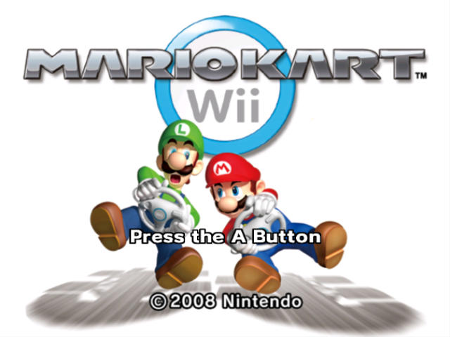
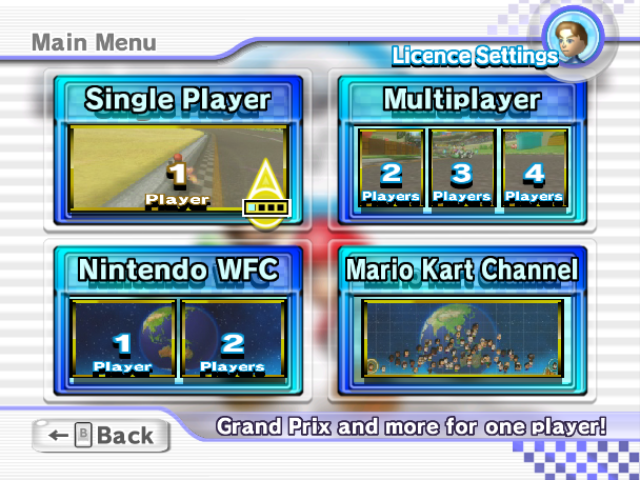
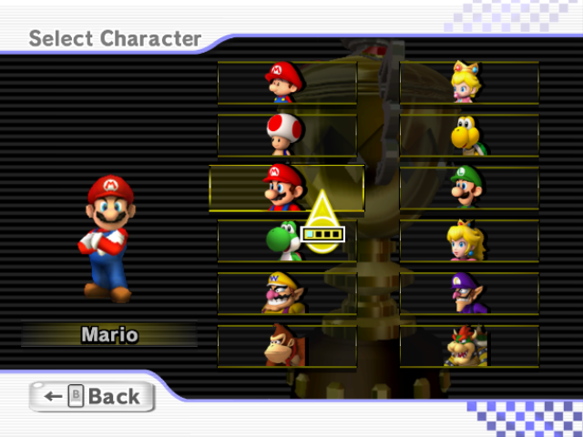
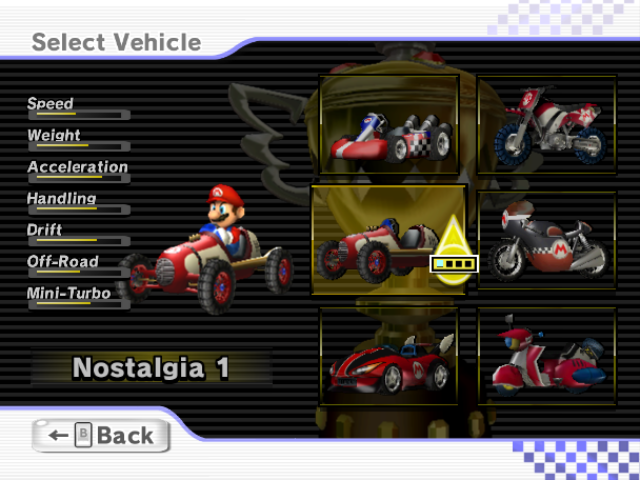

Mario Kart Wii
Description
Mario Kart Wii is an installment of the long-running Mario Kart series, but here for the Nintendo Wii, where you take control of various Nintendo characters to race through different tracks and win the Grand Prix, using a variety of vehicles and items spread through the track to help you.
Publication Information
- Released: April 10th, 2008
- Publishers: Nintendo Co., Ltd.
- Developers: Nintendo EAD
Additional Information
- Genre: Racing/Driving
- Number of Offline Players: 1-4
- Number of Online Players: 2-12
- Critic Score: 84%
- Player Score: 4/5 stars out of 73 reviews
Review
Overall, Mario Kart Wii is extremely rewarding and we take into account the Wii wheel shell (yes, we just complimented a shell…), the inclusion of IR and non-IR supported menus, the seamless integration of console Miis, and never-ending laundry list of WiiConnect24 and Nintendo Wi-Fi Connection features, the continued support of traditional control schemes, the retro levels, and much more. For the thick-minded, Mario Kart Wii offers a seemingly never-ending amount of content.
Screenshots
   Source
All images and information is from mobygames.com